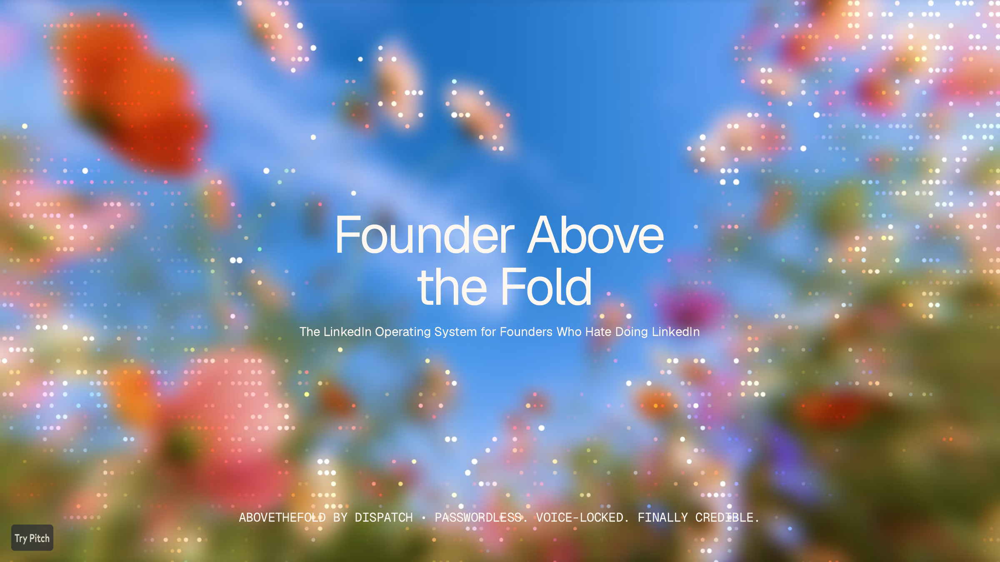
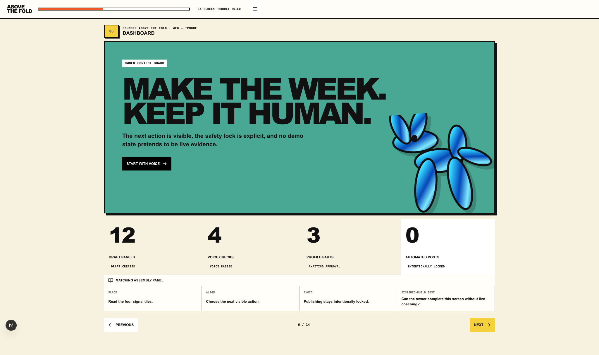
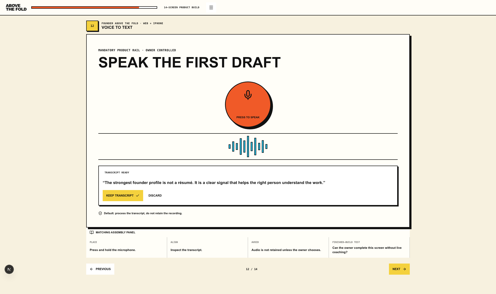
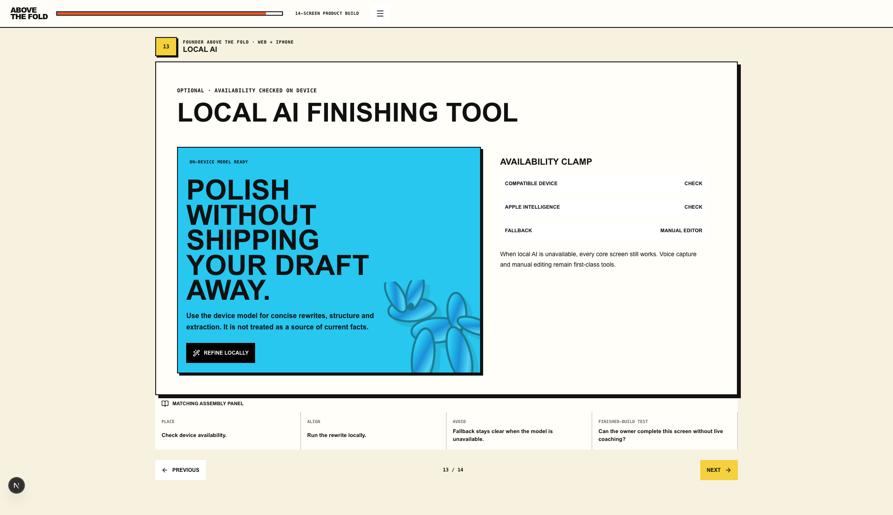
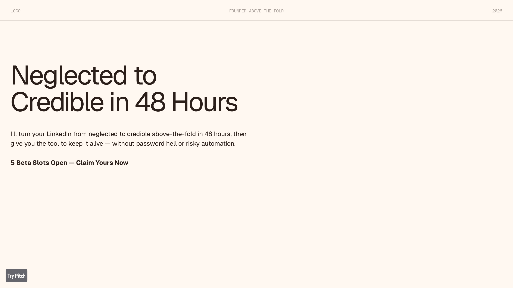

Build-a-thon submission
Built in 21 straight hours · One working product

Working product · Dashboard
Real owner workbench · Automated posts intentionally locked

Working product · Voice to text

Working product · Optional local AI

Finished build
Private beta · Five founder builds